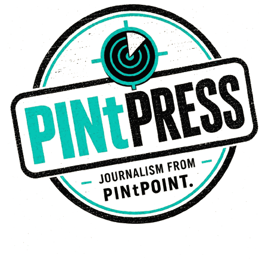

Guides, essays, postcards and notes on beer: where to drink it, where it came from, and what’s in the glass. Nothing sponsored.
New here? Start with the four-essay guide.
Images
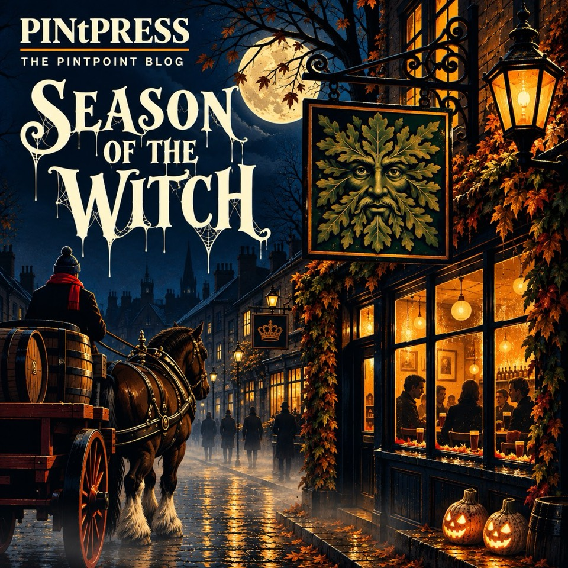
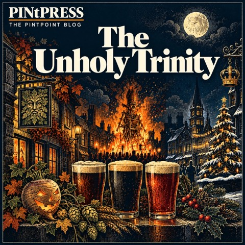
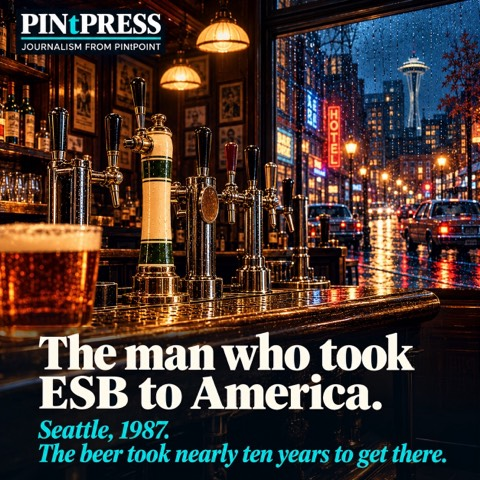
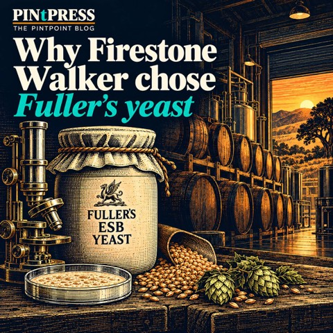
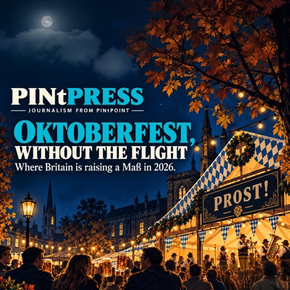
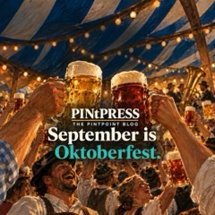
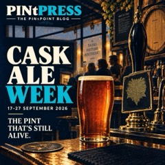
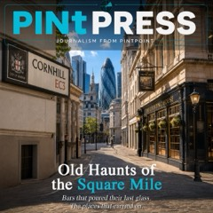
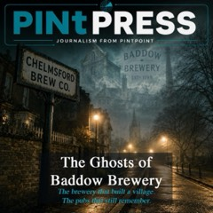
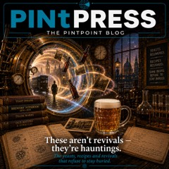
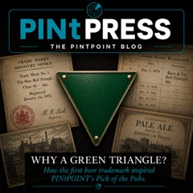
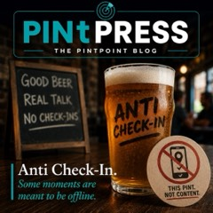
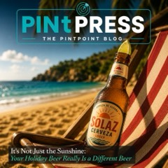
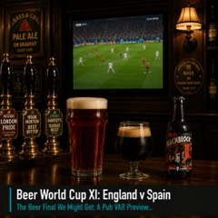
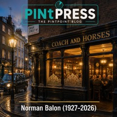
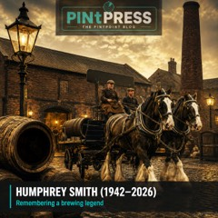
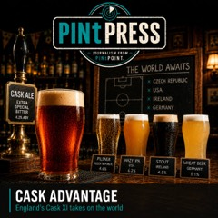
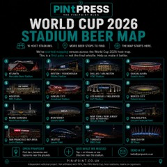
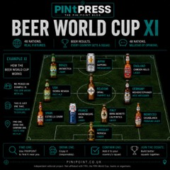
Older posts
-
23 September 2026 · GuideTegernseer on Draught, and WhereTegernseer Hell is one of Bavaria’s most sought-after lagers and reaches British bars in small, unpublicised quantities. Cross-referencing our own live tap data finds eleven UK venues that have poured it.Read the guide →
-
20 September 2026 · EssayEverything Traditional About Oktoberfest Is Younger Than the TentIn 1898 a Nuremberg publican used five strawmen to buy five Oktoberfest stalls and built a hall for 6,000. The restaurateurs sued and lost. The pale beer, the giant tent and the six-brewery rule are all younger than anyone admits.Read the essay →
-
3 September 2026 · EssayThe Geography of SobrietyHow Wapping and Canary Wharf relocated London’s great professional drinking cultures into places where they could not breathe.Read the essay →
-
27 June 2026 · GuideLoaded’s World Cup Canon: From Crisps to VodkaThe canonical record of Loaded magazine’s recurring World Cup format. The first five editions ran in fifteen months from September 1994 to December 1995, Crisp, Washing Powder, Lager’lympics, Cereals and Vodka, and define the format at its peak.Read the guide →
-
2 June 2026 · EssayBeerology — The Anatomy of a PintWhat does this beer actually feel like to drink? Eight axes — Body, Bitterness, Sweetness, Roast, Fruit, Finish, Softness, Complexity — plus four drinker cues, a drinkability bucket, and one plain-English gut-take sentence per beer. Built for the 800-millisecond tap-list decision; honest about the sour and Belgian-yeast styles it doesn't cover. The capstone of the four-essay arc on choosing the right pint.Read the essay →
-
24 May 2026 · EssayAnchor Brewing's British heritage runs deeper than people realiseTwo of Anchor's signature beers came home from an October 1975 Yorkshire pub tour. Liberty Ale, the one everyone credits to it, predates it by six months. The Great American Beer Festival was modelled on CAMRA's GBBF. Anchor first reached British draught in November 1991, in borrowed Fuller's kegs, and a Halifax distributor kept it there for fifteen years after. The companion to Friday's revival piece: the case that Anchor's identity was always partly English, and what that means for a return to UK taps.Read the essay →
-
22 May 2026 · EssayAnchor Brewing looks to be coming back. The 2021 rebrand isn't.Construction crews at Potrero Hill, twenty months of silence from a billionaire owner, and a homepage in May 2026 still wearing the 1896 logo — not the 2021 mark drinkers hated. Anchor's revival is moving from rumour into pre-brewing infrastructure. What's coming back, on the evidence, is the older Anchor.Read the essay →
-
20 May 2026 · EssayUnder the Hood: How PINtDEXTER Picks Your PintThe engineering follow-up to the recommender essay. The four layers PINtDEXTER stacks under the hood — preference capture, manual sliders, per-beer LLM-inferred flavour DNA, and venue-aware scoring — and the misclassified pale lager that exposed the most recent fix. For the data-science curious.Read the essay →
-
16 May 2026 · NoteSave Our Pubs, In One Pub: The Bell at IngatestoneWe walked into the Bell to claim a free pint of Telegraph Ale on Saturday. PINtPOINT's Financial Pressure Index also flags the same building as Struggling — rates up 74% vs 2023, FPI 44.38/100. The campaign's structural argument, made personal, on the bar in front of us.Read the note →
Got a topic you'd like us to cover? hello@pintpoint.co.uk